Veilig Verkeer quiz
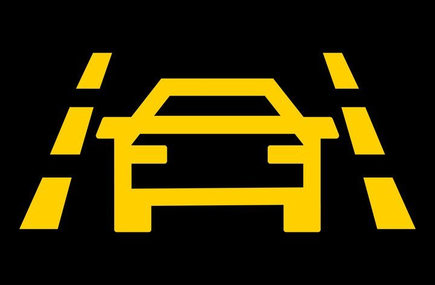
#023
Je auto is uitgerust met een rijstrookassistent. Welke stelling klopt?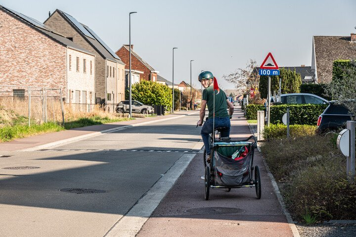
#022
Hoeveel kinderen mag je maximaal vervoeren in een fietskar?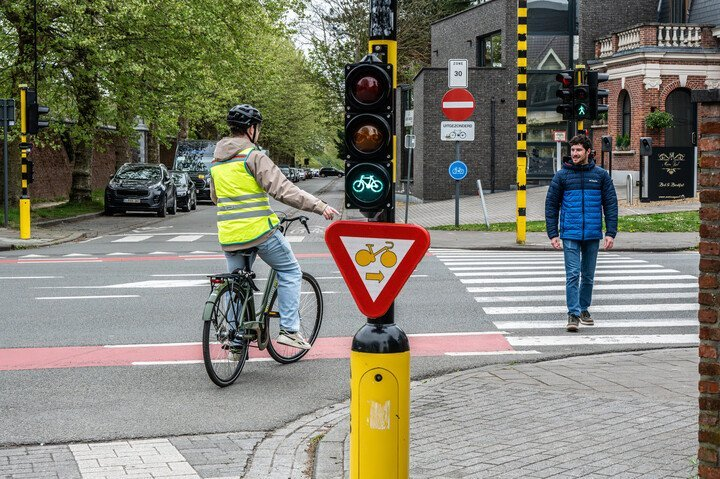
#021
Voor wie geldt dit verkeersbord?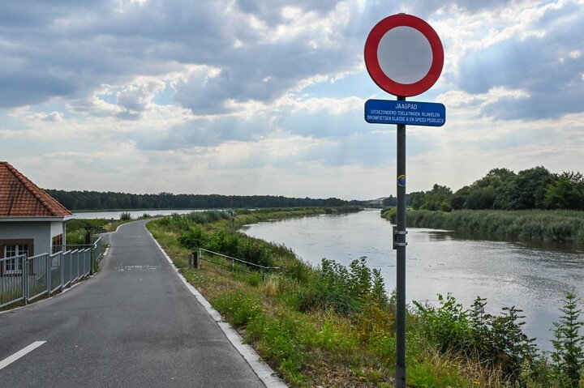
#020
Mag je met een speedpedelec op een jaagpad langs het kanaal rijden?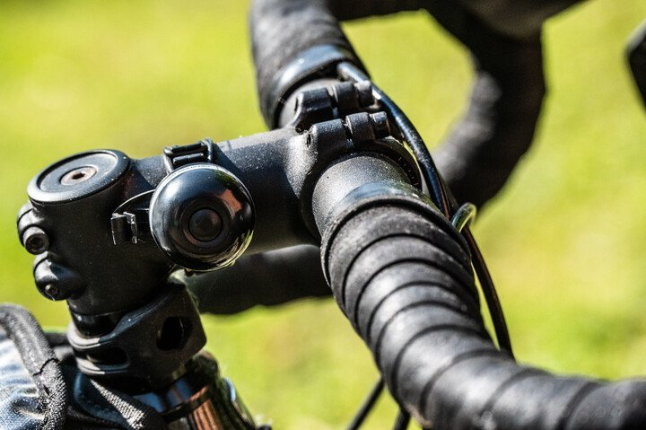
#019
Is een fietsbel verplicht op een koersfiets?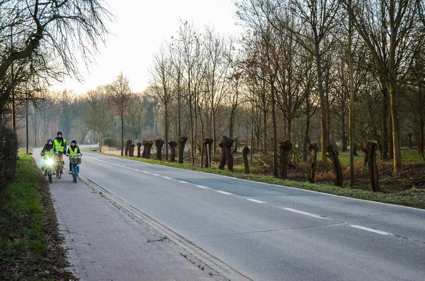
#018
Waar moet je stappen op deze weg?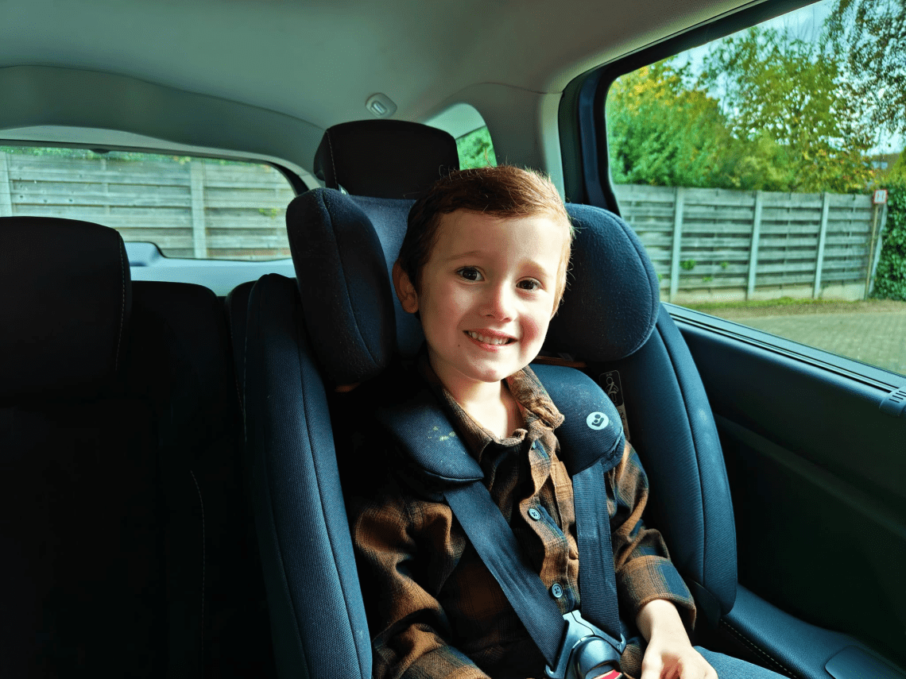
#017
Is het veilig om je kind dikke kledij aan te doen in een autostoel? #016
#016
Mag een fietslicht knipperen?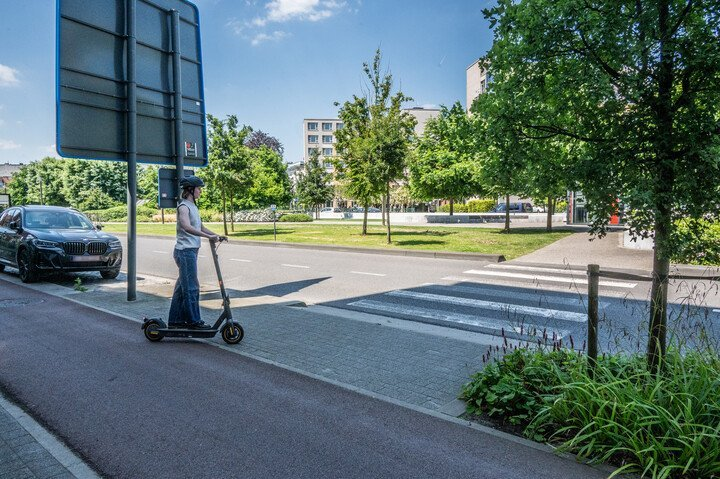
#015
Mag je met een e-step al rijdend op een zebrapad oversteken?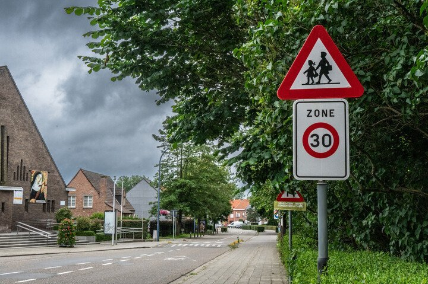
#014
Het is weekend, moet ik rekening houden met dit zone 30-bord in een schoolomgeving?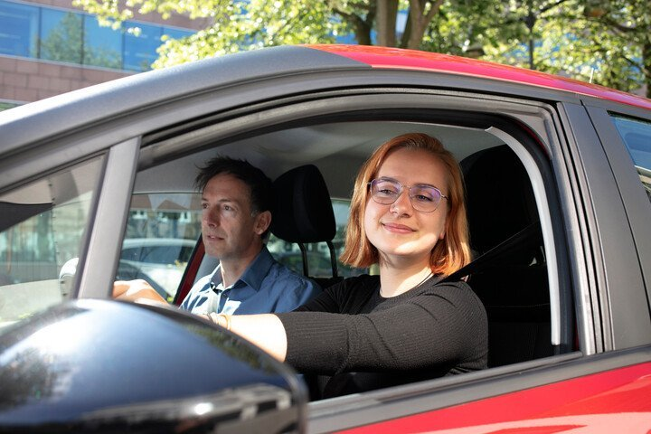
#013
Je hebt net je rijbewijs en hebt je vrienden beloofd hen veilig thuis te brengen op oudejaarsavond. Je blijft de hele avond nuchter, zo loop je ook niet het minste risico op een zware straf. Want welke zware straf riskeren beginnende bestuurders?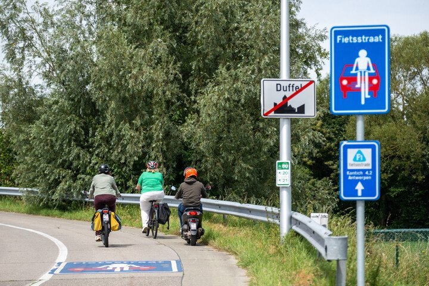
#012
Moet een speedpedelec achter fietsers blijven in een fietszone?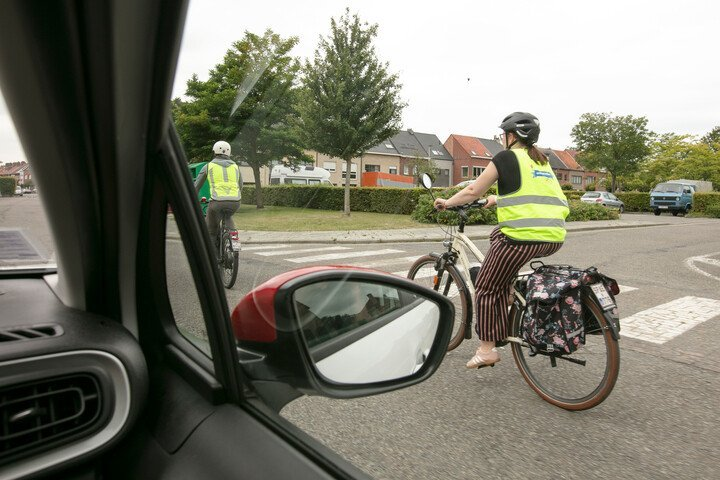
#011
Je fietst binnen de bebouwde kom. Hoeveel zijdelingse afstand moet een autobestuurder bewaren als hij je wil voorbijrijden, inhalen of kruisen?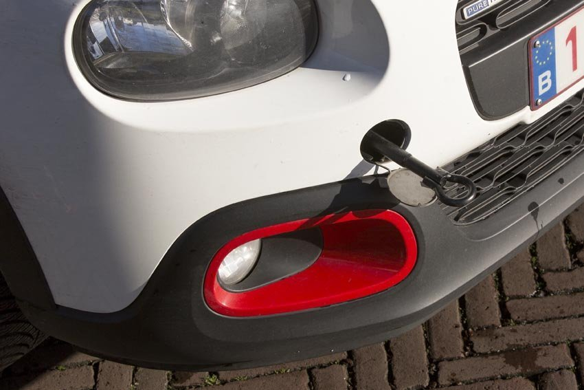
#010
Hoe snel mag je maximaal rijden wanneer je een ander voertuig sleept?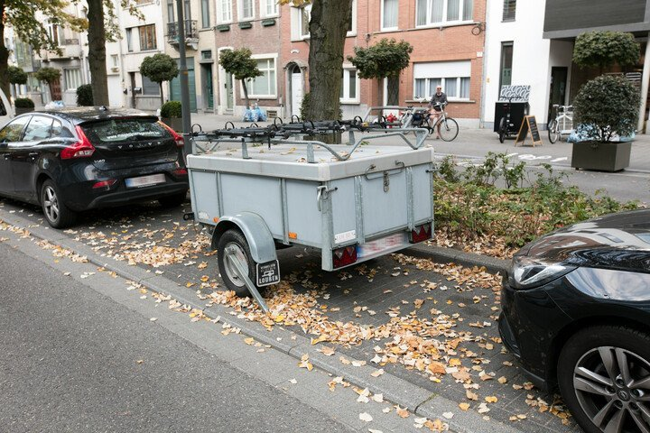
#009
Hoelang mag je een losstaande aanhangwagen op de openbare weg laten staan?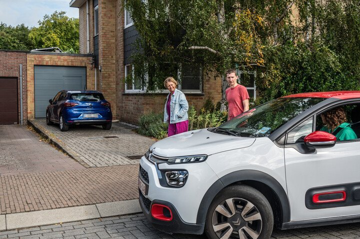
#008
Mag je op de openbare weg voor een garagepoort stilstaan om iemand te laten in- of uitstappen?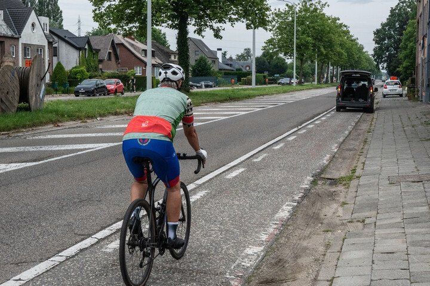
#007
Mag je met de wagen even stilstaan op een fietspad om iemand te laten in- of uitstappen?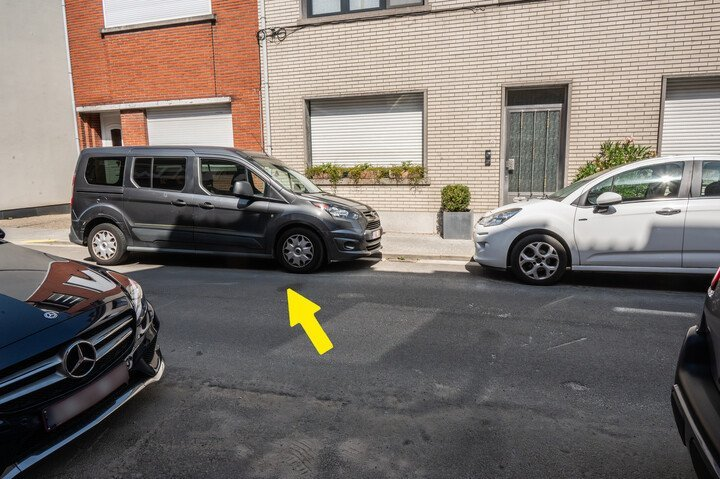
#006
Dit is een straat met tweerichtingsverkeer. Mag je je auto op deze manier parkeren?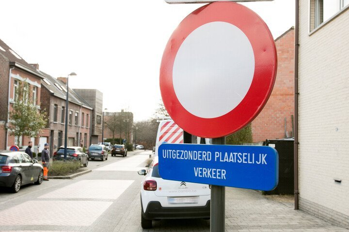
#005
Mag je als fietser een straat inrijden die verboden is voor bestuurders, 'uitgezonderd plaatselijk verkeer'?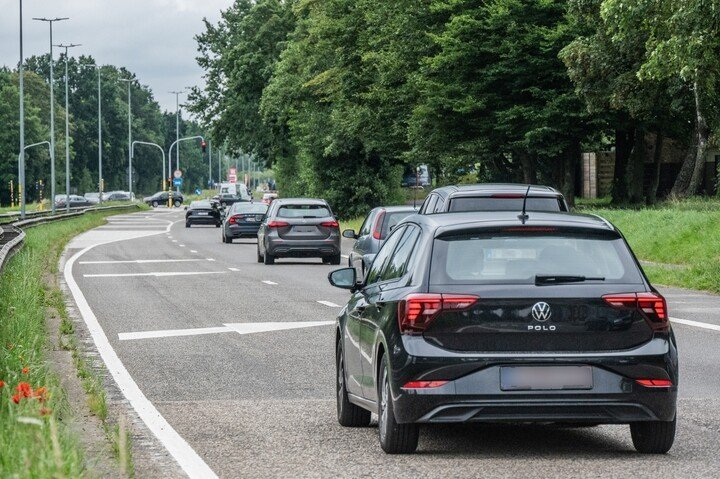
#004
Er is sterk vertraagd verkeer. Hoe moet je correct ritsen in deze situatie?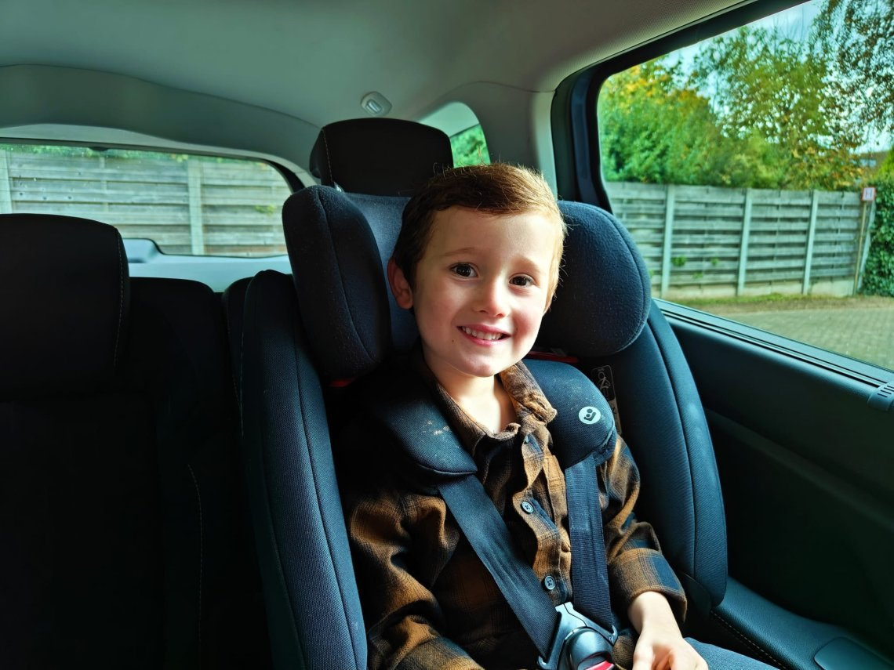
#003
Tot welke leeftijd moet je kind verplicht in een autostoel zitten?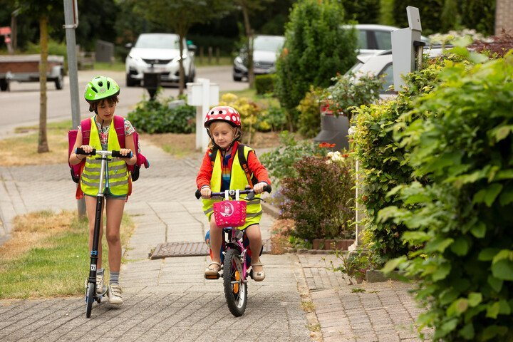
#002
Tot welke leeftijd mag een kind op het voetpad fietsen?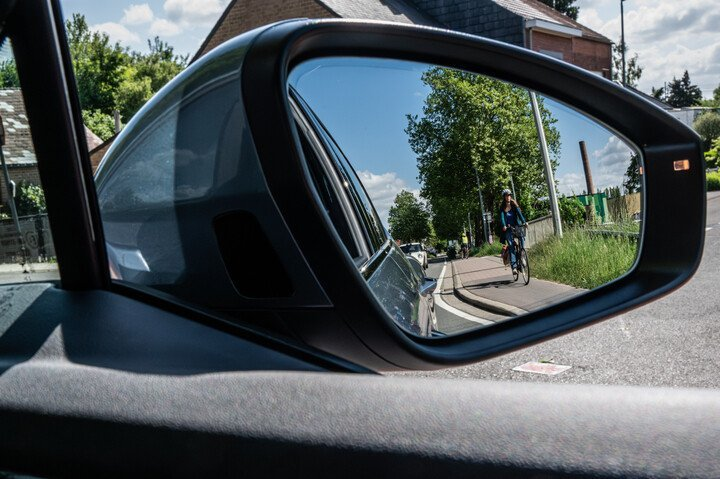
#001
Kan je met een auto een dodehoekongeval veroorzaken?